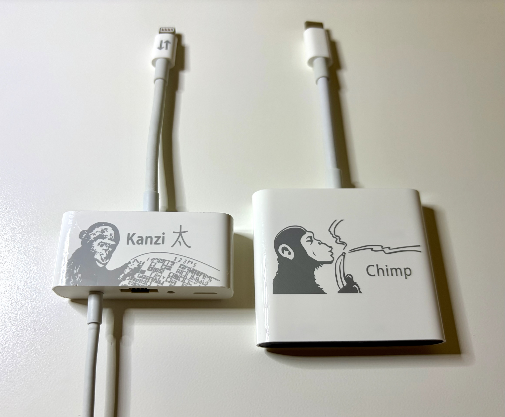
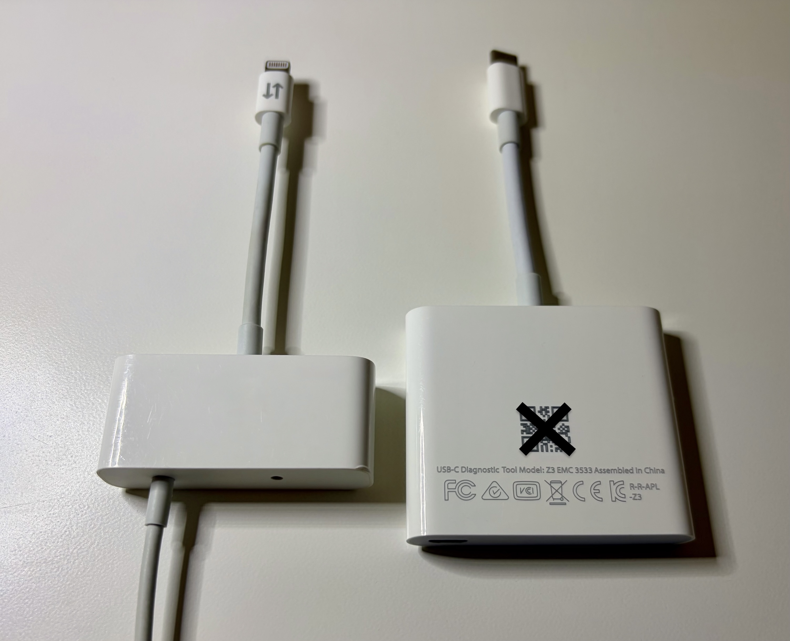
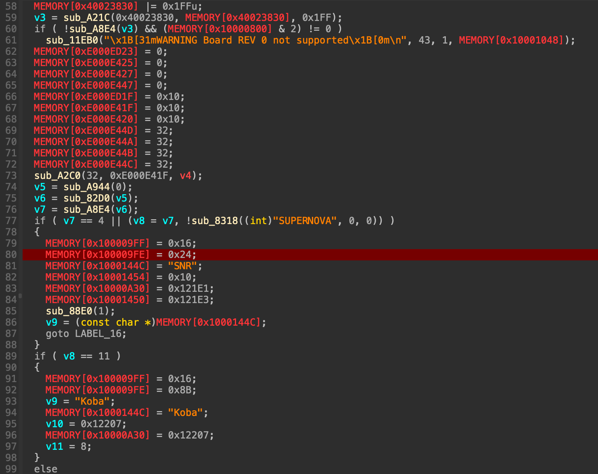
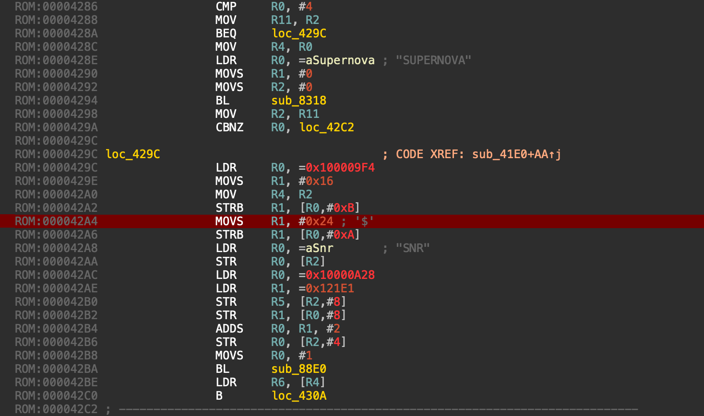
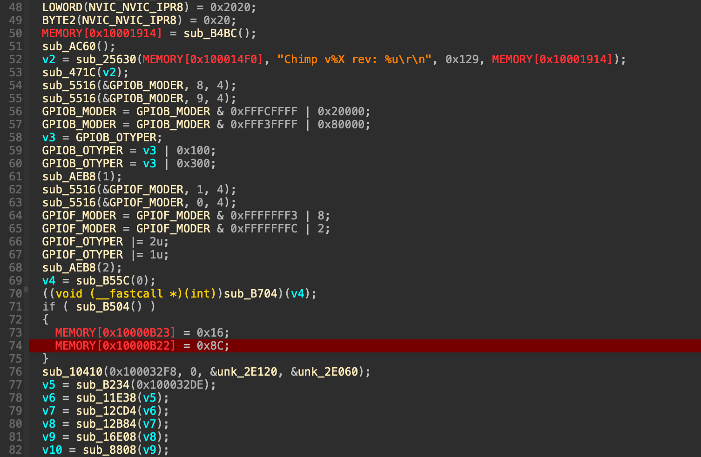
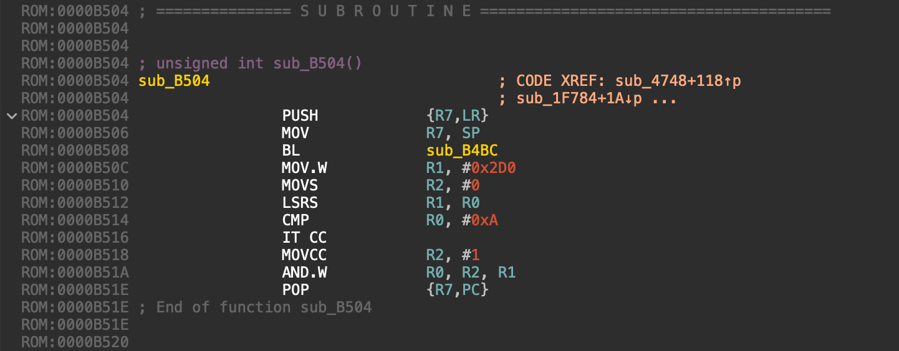

Turning Apple retail technician's cables into JTAG probes
Important note: information described in this article is potentially DANGEROUS! Apply this knowledge only if you understand what you are doing. I assume you know basic ARM assembly and reverse engineering. If you break something, it's not my fault!
Apple uses their own SWD probes to debug hardware internally. There are many different kinds of probes out there, but the 2 most famous are Kanzi (Lightning) and Chimp (USB-C)

Both those probes have their evil twins - Nova (commonly known as Serial Number Reader or just SNR) and USB-C Diagnostic Tool (or UDT)

These are used by Apple's retail technicians (and their partners) to read serial numbers from dead devices and etc. This means they are more commonly available on gray/black markets than real Kanzi/Chimp/etc.
As you likely understood already, these cables are very similar hardware to the actual SWD debug probes, and thus can be repurposed accordingly. This article describes various techniques you can make use of in order to achieve that
No breaking news here, most of those techniques were known for ages, although never properly documented
Kanzi vs. Nova
Astris (the AppleInternal debugging software kit) detects USB probes by their VID (Vendor ID) and PID (Product ID). To be more precise, Astris has a probe server daemon astrisprobed that handles that
Original Kanzi has PID 0x1621 and SNR/Nova has 0x1624. Both have standard Apple USB VID - 0x5AC
astrisprobed only knows 0x1621 and not 0x1624 and thus totally ignores Nova. There are multiple ways to fix it
Patch astrisprobed statically
The old method is to patch astrisprobed to recognize PID 0x1624 instead of 0x1621. It's a static data patch and doesn't even need any disassembler. In hex-editor replace all occurences of AC 05 21 16 with AC 05 24 16 - older versions had 2 occurences per fat Mach-O slice, newer - only one. Also needs a code-signature fix on somewhat modern Mac OS X
Patch astrisprobed dynamically
Slightly newer method is to apply this patch dynamically via custom daemon that does task_for_pid() against the probe server daemon. This is troublesome on modern Mac OS X since astrisprobed is signed by Apple and thus considered a platform binary and thus a subject to SIP (System Integrity Protection)
These two methods have another big downside - original Kanzi won't be detected anymore unless you undo the patch. So if you have both Kanzi and Nova in your employ - this is going to be pain. So at some point I came up with another method
Swap the USB Product ID via AppleUSBMergeNub
AppleUSBMergeNub lets us swap properties of USB devices dynamically. Yes, including PID. So all it takes is to make a little kext (kernel extension) that will utilize it. There is no need for any code even, just a special entry in Info.plist
<key>IOKitPersonalities</key>
<dict>
<key>Nova</key>
<dict>
<key>CFBundleIdentifier</key>
<string>com.apple.driver.AppleUSBMergeNub</string>
<key>IOClass</key>
<string>AppleUSBMergeNub</string>
<key>IOProviderClass</key>
<string>IOUSBDevice</string>
<key>IOProviderMergeProperties</key>
<dict>
<key>idProduct</key>
<integer>5665</integer> <--- PID to swap with
</dict>
<key>idProduct</key> <--- PID to match against
<integer>5668</integer>
<key>idVendor</key>
<integer>1452</integer> <--- VID to match against
</dict>
</dict>
However loading kexts, even codeless, is also a major trouble on modern Macs, especially Apple Silicon
There is one more way that I also consider the most convinient - firmware patching
Anatomy of Kanzi firmware
Kanzi (Koba, Chimp, Koko & their derivatives) firmwares don't really have any containers, but yet still have to follow certain rules:
-
First
0x4000bytes are reserved for bootloader (KanziBoot, ChimpBoot & KokoBoot - they are all pretty much the same)- Bootloader is NOT updated normally...
- ...however still has to be present in firmware image you wish to flash
- It is updatable over SWD though, but usually you wouldn't want to do it
-
Starting from offset
0x4000there comes an actual firmware- At offset
0x1Cthere is length of the firmware
- At offset
-
Bootloader calculates CRC32 sum of the firmware
- The last 32-bits of the firmware must be set to a value that makes the final checksum equal to
0 - If the final sum is not
0, firmware is considered broken, and bootloader enters firmware upgrade mode instead of jumping there
- The last 32-bits of the firmware must be set to a value that makes the final checksum equal to
-
This means we have to fix up those 32 bits shall we apply any patches
- For your convinience I have a tool for that - kblcrcfix, part of kanzitools project of mine
Nova patch
I assume you have a firmware image on hands. If not, you can either dump it with kblctl (part of kanzitools as well), or just find dumps online
Kanzi/Nova uses STM32F407 microcontroller that is based on ARM Cortex-M4 CPU, so in IDA you have to set 32-bit ARM Little-Endian architecture
Find this place in the disassembly. Might look slightly different in older versions (before 1.xx series), but the logic is going to be pretty much the same

As you likely understood already it is the place where they assign 0x1624 PID if running on SNR cable. Here is how it looks in ARM assembly:

MOVS R1, #0x24 is 24 21 in hex, and you have to replace it with MOVS R1, #0x21 or 21 21 in hex
I find it kind of ironic that MOVS R1, #0xYY is YY 21 in machine code, given the context
After applying the patch to a firmware image, you have to fix up the CRC thing with kblcrcfix as stated above
In order to flash it you can use either native astrisctl or kblctl from kanzitools
In both cases you will need to enter bootloader mode first - there is a little button in the LED hole. You can push it gently with an iPhone SIM ejector or a needle. If you see that the LED started flashing orange instead of usual green, it successfully entered the bootloader mode
After flashing the firmware your SNR cable should get 0x1621 USB PID and thus be recognizable with Astris
Important: KanziBoot is hard to kill, so even if you mess up your firmware patch so hard it won't work anymore, you should always be able to go back into bootloader mode by pressing the button and flash a good firmware
UDT patch
If you patch astrisprobed to recognize PID 0x168C as Chimp (PID 0x162C), UDT will be recognized by Astris, yes, but will still fail to explore anything. Not even serial console is going to work. Seems that Apple tried to limit their layman's cable from real JTAG probe functionality this time
First solution that I found was flashing a super old firmware that simply doesn't know anything about UDT. 0.36 & 0.38 are the best for the purpose, and yes, they really make it work! However, this is a half-measure...
Then I briefly analyzed Chimp firmware and found out that it recognizes UDTs by board revision value. My 5XXXXX UDT reported revision 4 and my real 4XXXXX Chimp reported 3. So I patched the firmware to always think it's board rev 3. And it all just worked!
Unfortunately, when I put my hands on 7XXXXX UDTs (some of them still might have 5XXXXX serial numbers on enclosure engravings for some reason), the board revision trick still worked, but the probes could no longer access their EEPROM (little non-volatile storage), so they could neither access NVRAM (where environment variables go) nor even their own serial number (it was ChimpSWD-000000 in Astris)
I made another little dive into the firmware. Look at this piece of code:

So if sub_B504 returns 1, it assigns UDT PID! I'm pretty certain this function checks if it's running on a UDT

As far as I understood, certain board revisions are reserved for UDT, and the rest are for proper Chimp, so this function checks on that. In any case we can patch this function to always return 0
MOVS R0, #0x0
BX LR
...or 00 20 70 47 in hex
You must patch the function itself, rather than patching the call where they assign USB PID, because it's called in multiple places
I believe it's a better solution than swapping board revision either via firmware patch or by moving resistors on PCB, since it's more universal
That being said, the UDT check is implemented as a separate function only in newer versions (around 1.14 and newer). Before that they checked for board revision being 4, and such checks were inlined, so the best way for older firmwares is still patching the function that reads board revision to always return 3
In any case, don't forget to fix the CRC thing with kblcrcfix before flashing
Flashing UDT firmware
UDT's enclosure doesn't have any holes except for the micro-USB port. That means there is no button to press
However, you can patch astrisprobed to recognize 0x168C PID and use probeenterdfu (kanzitools again, yes) to make it enter bootloader, so you can freely flash patched firmware from there
Important: make absolutely sure your patches are correct! If you render your firmware non-functional, there won't be an easy way to enter the bootloader and fix it. However, the button is still there, but it's hidden by the bottom piece of the enclosure. It's doable to remove it without major cosmetic damage, so in the worst case scenario you can still do that